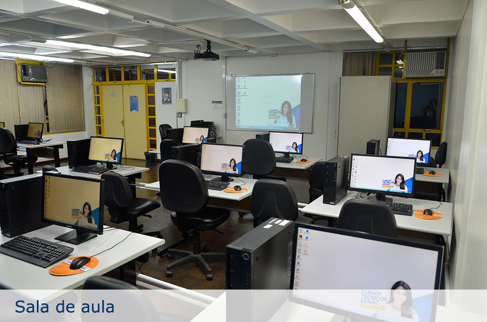

Sobre o SENAC
O Serviço Nacional de Aprendizagem Comercial – Senac é uma instituição de educação profissional, fundada em 10 de janeiro de 1946 com o objetivo de colaborar na obra, difusão e aperfeiçoamento do ensino profissional no setor terciário. No Rio Grande do Sul, o Senac foi instalado em 13 de setembro do mesmo ano e nos mais de 70 anos de atuação já capacitou mais de 7 milhões de gaúchos. A instituição cumpre a importante missão de educar para o trabalho em atividades do comércio de bens, serviços e turismo. O Senac-RS faz parte da Federação do Comércio de Bens e Serviços do Rio Grande do Sul – Fecomércio-RS, o que vincula a entidade ao mundo do trabalho por meio de 569 mil empresas do comércio de bens, serviços e turismo – que geram um milhão de empregos formais.

O Senac-RS disponibiliza educação em todos os níveis – do Menor Aprendiz à Pós-Graduação. Atualmente, a entidade conta com duas faculdades – Faculdade Senac Porto e Faculdade de Tecnologia Senac Pelotas, além de 41 escolas de educação profissional distribuídas pelo Estado e 23 Unidades Sesc/Senac. São mais de 60 postos de atendimento que possibilitam o Senac atender a todos os 497 municípios gaúchos.
Muito antes de se falar em responsabilidade social, o Senac já exercia, na prática, a inclusão social ao preparar menores aprendizes para o mundo do trabalho. Mais do que ser a sua razão de existir, o Menor Aprendiz é a prova da importância e contribuição da Instituição para a educação profissional brasileira. Vinculados ao programa Jovem Aprendiz, por meio da Lei Federal 10.097/200 e Decreto nº 5598/2005, os cursos de Aprendizagem Comercial, oferecidos gratuitamente pelo Senac-RS, envolvem os alunos em aulas que variam de 1.100 a 1.200 horas de atividades curriculares, das quais metade se referem à capacitação teórica e a outra metade à prática supervisionada (realizada nas dependências da empresa).

O Programa Senac de Gratuidade (PSG), resultado de um acordo entre o Senac e o Governo Federal em 2008, significa educação profissional de qualidade para que milhares de pessoas possam planejar seus estudos e ter mais oportunidade de trabalho e emprego. O PSG oferece cursos de Aprendizagem, cursos de nível técnico, qualificação técnica, cursos de capacitação e aperfeiçoamento, totalizando mais de 20 mil alunos atendidos gratuitamente nas unidades educacionais do Estado. Para ter acesso a esses cursos, os candidatos deverão atender aos seguintes critérios: pessoas com baixa renda, na condição de alunos matriculados ou egressos da educação básica e trabalhadores – empregados ou desempregados-, priorizando-se aqueles que satisfizerem as duas condições (aluno e trabalhador). Além disso, a Instituição desenvolve diversos projetos sociais em parceria com empresas e organização não-governamentais (ONG´s).
Considerando a rapidez das informações e do desenvolvimento tecnológico, o Senac oferece cursos de capacitação em horários alternativos, aplicando metodologias diferenciadas e personalizadas, laboratórios de alta tecnologia, atendimentos individualizados em ambientes modernos e confortáveis. Nos diversos níveis de capacitação, através de aulas presenciais ou à distância, o modelo pedagógico está baseado na apropriação de competências para o trabalho. O Senac propõe a qualificação de um indivíduo capaz de articular conhecimentos, habilidades e atitudes com o objetivo de agir, decidir e intervir em situações nem sempre previstas dentro e fora do mundo do trabalho, promovendo a construção da cidadania.